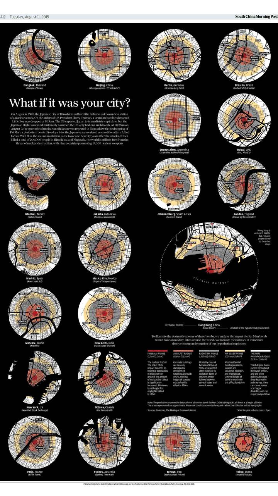

Información en gráficos figurativos
"The last days of rosewood" por Adolfo Arranz.
Publicado en Reuters Graphics.
"Water world" por Adolfo Arranz.
Publicado en Reuters Graphics.

"China's wildlife trade" por Adolfo Arranz.
Publicado en Reuters Graphics.
"Great outdoors" por Adolfo Arranz.
Publicado en Reuters Graphics.
Información en gráficos no figurativos
"Satellites network" por Alberto Lucas.
Publicado en Reuters Graphics.

"What if it was your city?" Por Alberto Lucas.
Publicado en Reuters Graphics.
"Identity yourself" por Simon Scarr.
Publicado en Reuters Graphics.
"A red tide" por Simon Scarr.
Publicado en Reuters Graphics.